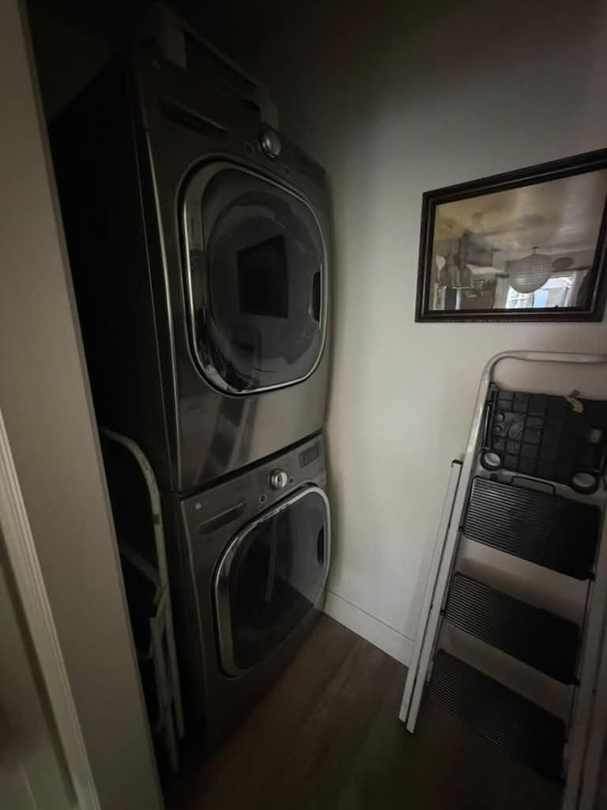
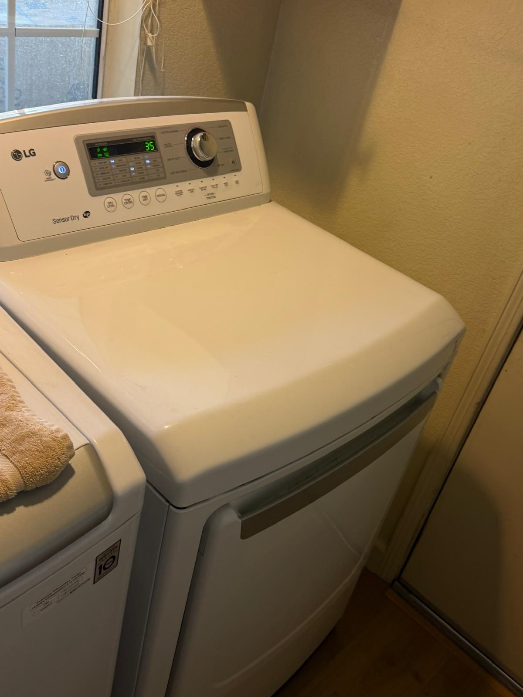
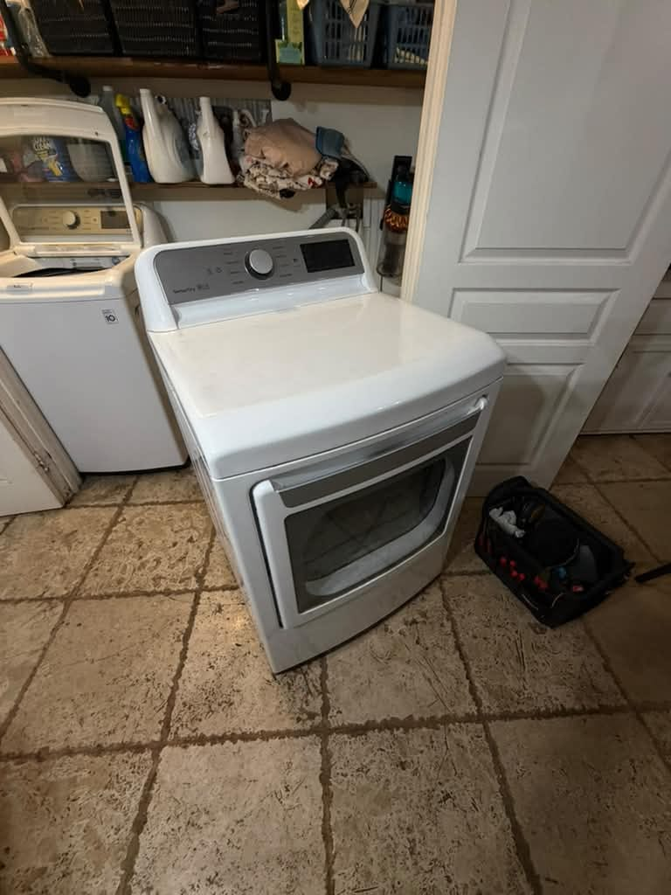
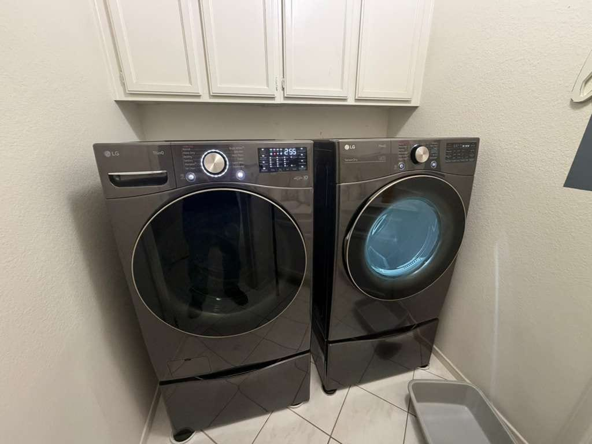
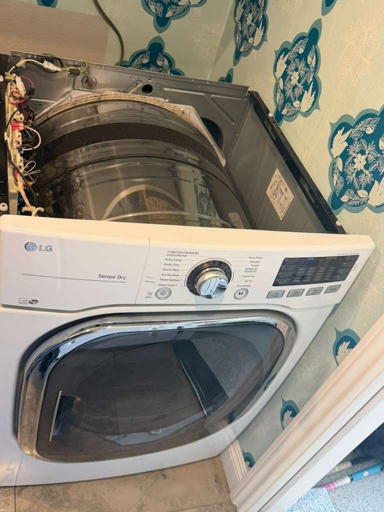
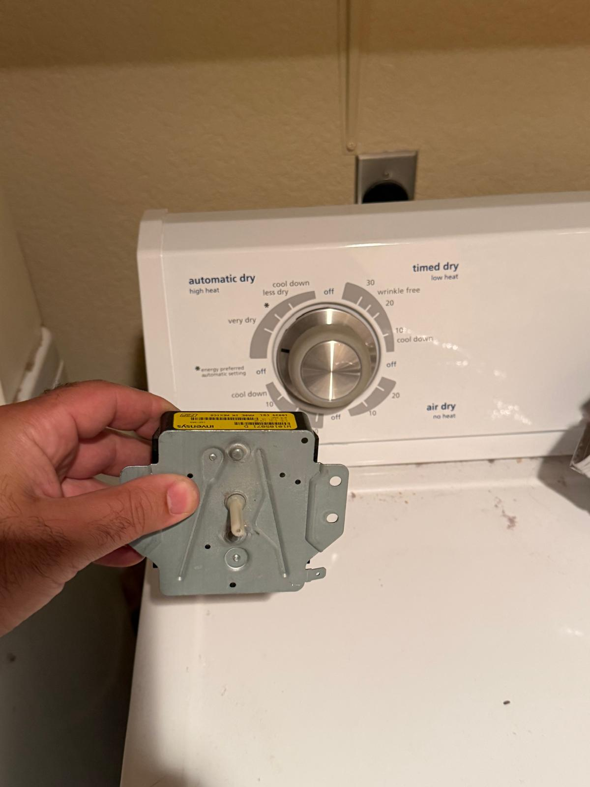
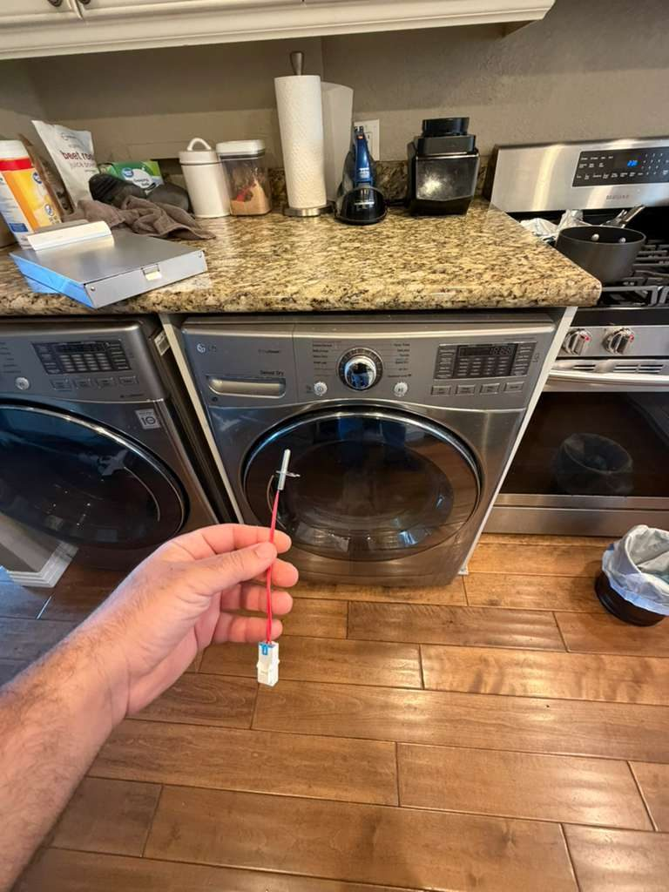
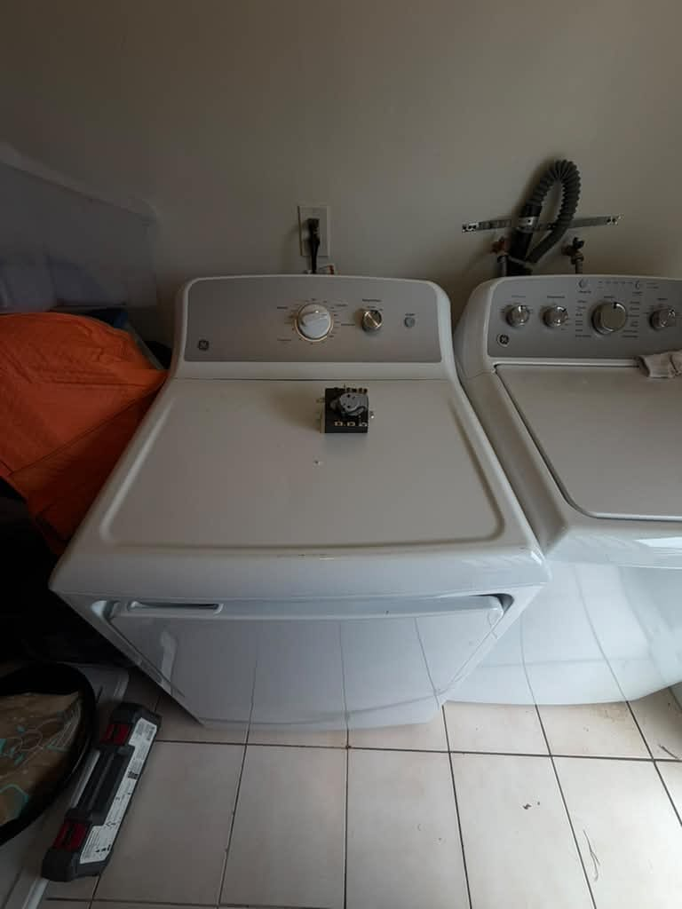

Dryer Repair in
Orange County, CA
Same-day service on gas & electric dryers: all brands, all types. Licensed technicians and a vent safety check on every visit.
5.0 · 156 Google reviewsMon–Sat, 8am–7pm. You don't need to know which part failed; tell us what the dryer is doing.

What to expect
- Flat $99 diagnostic feeApplied toward the repair if you approve the work.
- Written quote firstItemized, before any work starts.
- 90-day parts, 30-day laborWarranty on every repair.
- Same-day serviceCall or request online.
Family-owned since 2017 · Licensed, bonded & insured
Recent Dryer Repairs
Real dryer jobs completed by our technicians, including an LG dryer belt replacement in Long Beach and an LG dryer no-heat repair in Chino.






Show all 9 dryer repairs

What Dryer Repair Customers Say
From our 156 verified 5-star Google reviews
AG went above and beyond on the repair of my dryer. Not only did he fix the problem, but he also cleaned all the vents and made sure the dryer was in proper working condition.
Absolutely amazing service! Timely, cost was right, knowledgeable, great customer experience! Definitely will be using them again! Thank you! Dryer is back in action!
We've received fast and high quality service on our dryer each time we've needed it. The repairman is courteous and clear — we will call him again when another appliance needs repair.
AG has been fantastic while fixing our dryer! His work is thorough and his customer service is A+++! He will definitely be my 1st call when we need another repair! Thanks again AG!
AG fixed my Dryer. He discovered that the whole exhaust system was crammed with dust and valiantly crawled under the house amidst the dust and spiders and saved the day. He also diagnosed why my drawer fridge was whining, he told me to defrost it, duh. He is great, I would recommend him highly.
How Our Dryer Repair Works
From your call to a working dryer, usually the same day.
Request a RepairCall or Request Online
Call (949) 629-5365 or book online. Tell us the dryer type, brand, and symptom.Full Diagnostic
Your technician tests all components and inspects the exhaust vent, the most common hidden cause of dryer failure and fire risk.Clear Quote First
You get an itemized quote before any work begins. The $99 diagnostic fee is applied toward the repair if you approve.Fixed & Warranted
Most dryers are back in service the same visit. Every repair carries a 90-day parts and 30-day labor warranty.
Pricing & Discounts
- $99 diagnostic fee: applied toward your repair when you approve the work. If you decide not to proceed, the $99 covers the visit.
- 30-day diagnostic credit: call us back within 30 days and your $99 is credited toward the repair estimate.
- Multi-unit visits: first unit $99, each additional unit on the same visit $49.
- 20% off labor for repeat customers and seniors 60+ (cannot combine with other offers).
Estimates vary by brand, part availability, and diagnosis. Final quote is provided before repair. See full pricing guide
Diagnostic visit$99
- Applied toward the repair when you approve the work
- Itemized written quote before any work starts
- You decide whether to proceed
Common Dryer Problems We Fix
Most dryer failures are diagnosed and repaired in a single visit; we stock the most common parts on every truck.
- Dryer not heating: clothes still wet after a full cycle
- Takes 2–3 cycles to dry a normal load
- Dryer shuts off before clothes are dry
- Loud squealing, thumping, or grinding noise
- Drum not turning: motor runs but drum is still
- Dryer won't start: no power or no response
- Overheating: exterior too hot to touch
- Error codes on display (d80, d90, TE1, TE3, F01)
- Burning smell or scorched fabric
- Door latch broken: door won't close or stay shut
Dryer Vents & Fire Safety
A dryer that runs but takes longer than usual to dry clothes is not just inconvenient; it's a warning sign. Restricted exhaust vents trap heat, force the dryer to work harder, and create the conditions for lint to ignite.
What the numbers say: USFA says failure to clean was the leading contributing factor in 31% of home clothes-dryer fires in 2018-2020. In Southern California's dusty climate, lint accumulates faster than most homeowners expect.
Signs your vent needs attention: clothes take more than one cycle to dry, the dryer exterior is very hot to the touch, the laundry room feels humid, or it has been more than a year since the duct was cleaned.
Every service visit includes a vent inspection at no extra charge. If we find a restriction, we'll clear it and confirm proper airflow before we leave.
Dryer Brands We Service
We repair all major gas and electric dryer brands. Common parts stocked on every service vehicle.
- Samsung
- LG
- Whirlpool
- Maytag
- GE
- Bosch
- KitchenAid
- Frigidaire
- Kenmore
- Electrolux
- Miele
- Speed Queen
- All brands
Independent repair service. Not affiliated with or endorsed by these manufacturers; brand names and logos are trademarks of their owners.
- Samsung
- d80/d90/d95 vent blockage error codes, heating element failures, control board faults on DV-series front-load dryers.
- LG
- TE1/TE3 thermistor errors, drum roller and glide wear on DLGX/DLEX series, moisture sensor failures causing over-drying.
- Whirlpool & Maytag
- Thermal fuse and cycling thermostat failures, drive belt breakage, idler pulley wear, the most common dryer repairs in OC households.
- GE & GE Profile
- Heating element failures, igniter issues on gas models, timer motor faults on older mechanical-timer dryers.
- Bosch & KitchenAid
- Condenser filter blockages on Bosch heat-pump dryers, control board faults and drum seal wear on KitchenAid stacked units.
- Frigidaire & Kenmore
- Heating element and thermal limiter failures, idler pulley and drum bearing wear on older front-load models.
- Speed Queen
- Drive belt and motor start capacitor failures; exhaust vent blockages common on commercial-grade residential models.
- Electrolux, Miele & Others
- Also service Amana, Fisher & Paykel, and other brands. Call to confirm parts availability.
Repair or Replace Your Dryer?
Dryers have a Department of Energy mean service life of 14 years. If your machine is under 11 years old, repair is almost always the right call; a quality replacement dryer runs $600–$1,000 installed, and common repairs cost a fraction of that. Even a heating element replacement on a 7-year-old dryer makes economic sense. For a full breakdown by symptom, see our Orange County appliance repair cost guide.
Our rule of thumb: If the repair cost is under 50% of a comparable new dryer and the machine is under 11 years old, fix it. Past that, with a failed motor, drum bearing, or control board, we'll tell you honestly, and help you decide rather than push for the repair.
Typical Dryer Repair Costs in Orange County
| Repair Type | Typical Range |
|---|---|
| Service call / diagnostic: Orange County market average (often credited toward repair) | $75 – $100 |
| Heating element (electric) | $180 – $350 |
| Igniter / gas valve coils (gas) | $150 – $320 |
| Thermal fuse / thermostat | $120 – $240 |
| Drive belt | $130 – $250 |
| Drum rollers / idler pulley | $150 – $300 |
| Blower wheel / drive motor | $250 – $450 |
| Control board / timer | $220 – $400 |
Estimates vary by brand, part availability, and diagnosis. Final quote is provided before repair. See the dryer repair cost guide or our full appliance repair cost guide for broader Orange County pricing context.
Dryer repair across Orange County
Universal Appliances Repair Group Inc. provides dryer repair throughout Orange County, California. We repair gas and electric dryers, including front-load, top-load, and stackable models, from Samsung, LG, Whirlpool, Maytag, GE, Bosch, KitchenAid, Frigidaire, Kenmore, Speed Queen, and all major brands.
Our technicians serve Anaheim, Irvine, Huntington Beach, Santa Ana, Costa Mesa, Fullerton, Garden Grove, and nearby cities, with same-day service available. Call (949) 629-5365 or book online to schedule a dryer repair visit.
Dryer Repair: FAQs
Still have a question? Call (949) 629-5365.
In most cases, yes. Same-day dryer repair is usually available across Orange County when you call before noon, and we keep common parts like thermal fuses, heating elements, igniters, and drum rollers on the truck. There is no travel surcharge to any city we serve, from Anaheim, Santa Ana, and Garden Grove to Irvine, Huntington Beach, and Costa Mesa. Call (949) 629-5365 and we will confirm a same-day window for your address.
The most common cause is a blown thermal fuse, a one-time safety device that trips when the dryer overheats, usually from a clogged vent. Other causes include a failed heating element (electric), a faulty gas valve coil or igniter (gas), or a failed cycling thermostat. A clogged lint trap or duct restricts airflow and triggers the fuse to protect your home from fire.
A dryer that runs two or three cycles to dry one load almost always has a restricted exhaust vent. Lint builds up in the duct over time, cutting airflow and forcing the dryer to work longer. Other causes include a weak heating element, a dirty moisture sensor, or an overloaded drum. Duct runs over 15 feet with multiple bends need professional cleaning annually.
Squealing usually means worn drum support rollers or a failing idler pulley; both are standard wear items on dryers over five years old. A rhythmic thumping is typically worn drum glides or a deteriorated felt drum seal. These parts are inexpensive and most are fixed in a single visit.
Premature shut-off is usually a faulty moisture sensor bar or a hi-limit thermostat tripping from overheating. Clean the sensor bar (the two metal strips inside the drum) with rubbing alcohol and make sure your exhaust duct is clear. If the problem continues, a technician can test and replace any thermostat that's out of spec.
A fully non-heating dryer is not actively dangerous. The fire risk comes from a dryer that still runs heat but can't exhaust it due to a clogged vent, where lint packed into a restricted duct can ignite. USFA says failure to clean was the leading contributing factor in 31% of home clothes-dryer fires in 2018-2020. If your dryer has been running slow or the exhaust feels weak, have the vent inspected right away.
Yes. We repair both gas and electric dryers throughout Orange County. Gas dryer repairs include igniter replacement, gas valve coil failures, and flame sensor faults. Electric repairs include heating element replacement, terminal block failures, and control board issues. Our technicians carry parts for both fuel types on every truck.
Yes. Samsung dryers commonly display d80, d90, or d95 vent-blockage error codes; we clear the vent and repair any underlying damage. LG dryers often develop TE1 or TE3 thermistor errors and drum roller wear on front-loaders. We stock parts for both brands and resolve most issues in one visit.
Dryers have a Department of Energy mean service life of 14 years. If yours is under 11 years old and the repair is under half the cost of a new unit, repair wins. Common repairs (thermal fuse, heating element, drum rollers) are well under that threshold. Past that, with a failed motor or control board, we'll give you an honest assessment and leave the decision to you.
Need Dryer Repair in Orange County?
Same-day service available. Gas & electric dryers, all brands. Licensed technicians, free vent inspection with every repair, 90-day parts / 30-day labor warranty.
Call (949) 629-5365
Request a Repair
Mon–Sat, 8am–7pm